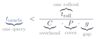

<!-- Slide 41: break-even.  The inequality the whole lesson builds toward for
     the one-coherent-query-lane baseline.

     Set in real LaTeX (assets/break-even-eq.tex) and rendered to
     assets/break-even-eq.svg by the Makefile, because Computer Modern sets a
     fraction, a relation and five braces better than hand-placed SVG <text>
     ever will.  The braces are part of the equation rather than captions
     placed beside it, so TeX keeps every name centred under the symbol it
     names even if the equation is edited.

     Rendered at build time, not by MathJax in the browser: the tutorial runs
     with networking disabled and the Makefile's MathJax is a CDN URL (which
     pandoc's blanked template variable drops anyway, so no MathJax actually
     reaches the page).  dvisvgm --no-fonts turns the glyphs into paths, so
     the file needs no webfont either.

     To change the inequality, edit the .tex and rebuild; do not hand-edit the
     generated SVG.

     This slide used to be assets/img/cairn-balanced.webp alone, which left
     the script's "read it aloud twice" pointing at a photograph of stones.
     The cairn stays in assets/img/ and is no longer referenced. -->
<div id="break-even-viz" style="display:flex; justify-content:center; margin:12px 0;">
  
</div>
